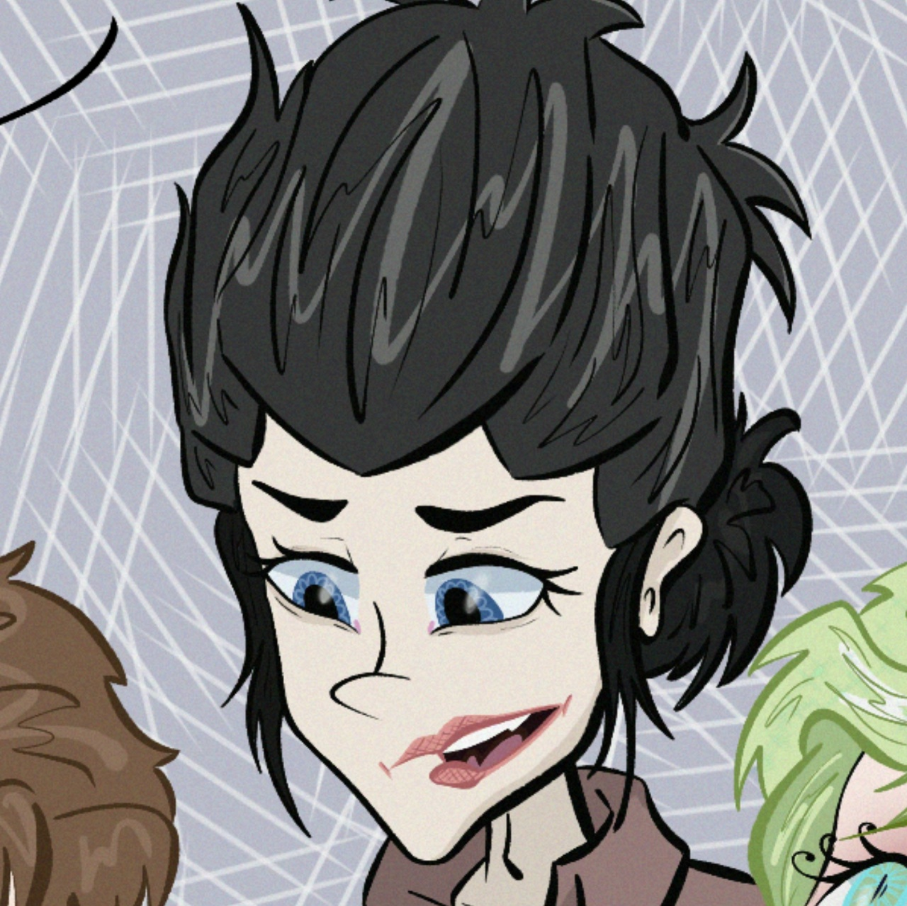
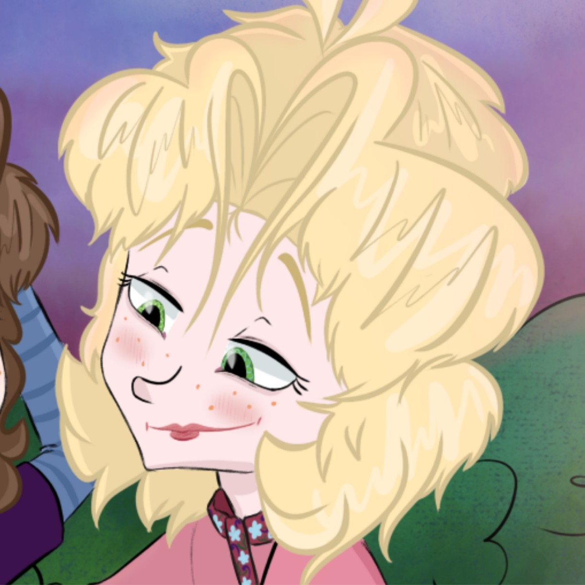
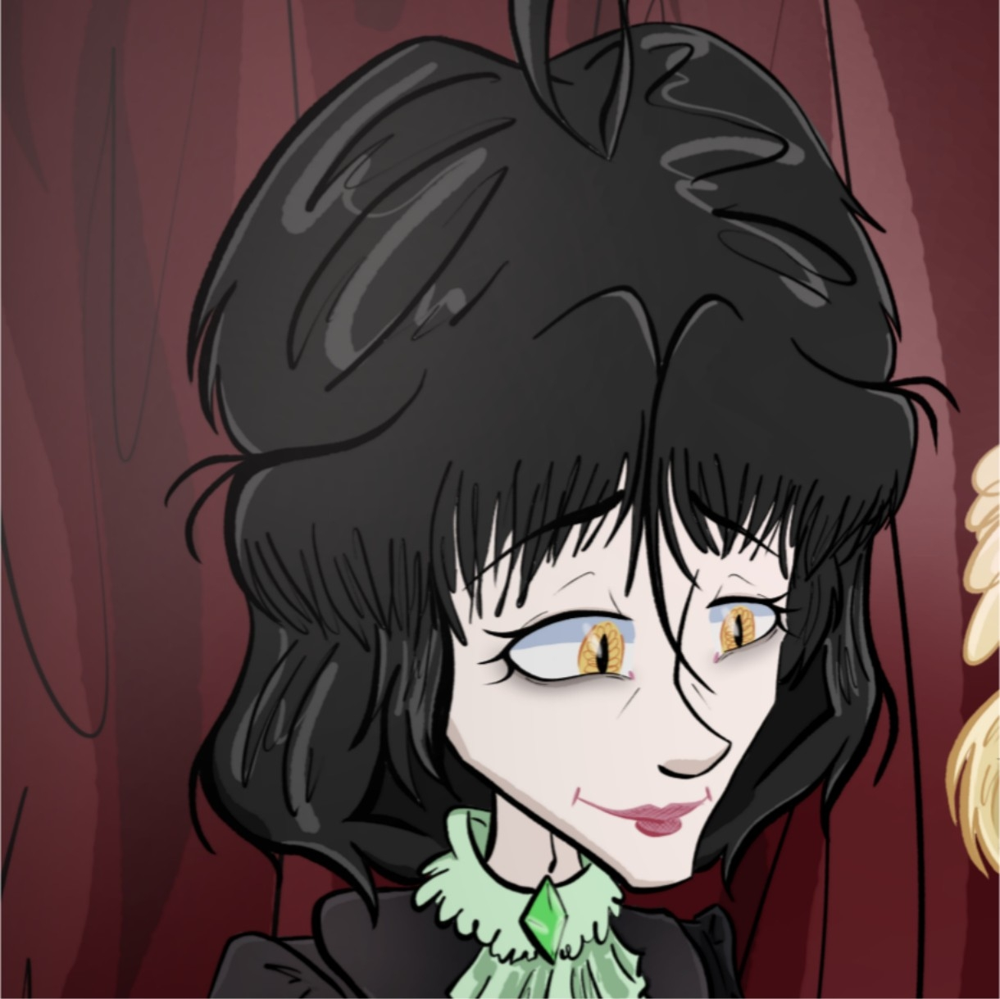
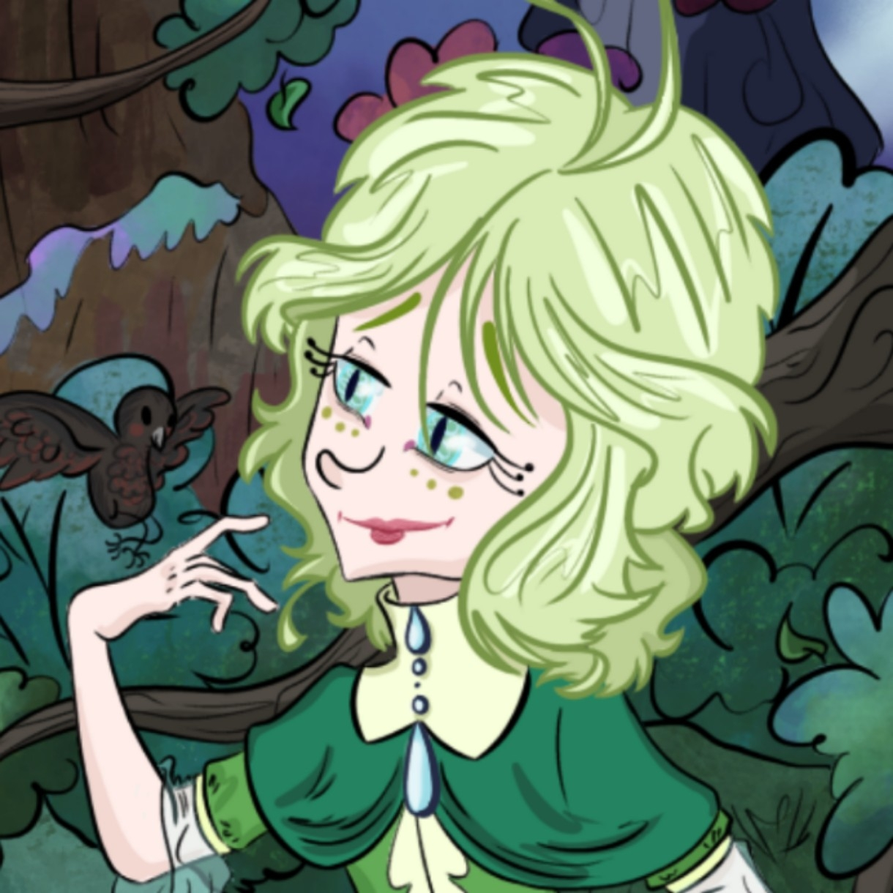

Деян
Возможно, он лишён синтементальности и слишком прямолинеен в своих словах, но его поступки в основном полны благородства, справедливости и всегда направлены исключительно на борьбу и отстаивание своих интересов и чести близких. По крайней мере он старается этому соответствовать, но жизнь же состоит из проб и ошибок, верно?
Подробнее
Лешек
Скрытный, но крайне язвительный молодой, на вид, человек, чьи высказывания часто могут ранить уязвлённое сердце. Однако сам он свои речи оценивает исключительно как светоч знаний и истины, что советовал бы и другим, если бы ему было до них дело…
Подробнее
Вета
Крайне амбивалентная юная особа. Ей бы хотелось найти хоть какой-то намёк на равновесие в мире, однако этого трудно достичь, когда ты и сам с собой не в гармонии.
Подробнее
Аделрик
Талантливый музыкант, чьи произведения тревожили душу преданных слушателей и разбивали сердца самых чувствительных персон. У него могло было быть большое будущее, но теперь он лишь заложник маски. Так ли был справедлив к нему судья его жизни?
Подробнее
Милан
Экспрессивный и вечно воодушевлённый юноша, чьё сознание забито различными захватывающими сюжетами и мечтаниями, а за душой множество весьма дерзких поступков. Возможно, для актёра этих качеств хватает за глаза, но достаточно ли это для потомка благородного рода? Или его близкие слишком несправедливо оценивают?
Подробнее
Ефим
Выражение «горе от ума» он знает слишком хорошо. По-хорошему, он бы хотел тихой компании с самим собой наедине со множеством ещё нереализованных экспериментов. Но жизнь упрямо преподносит ему сюрпризы и постоянно заставляет участвовать в ней активнее, чем обычно. Не то что бы он как-то яро этому сопротивлялся…
Подробнее
Ванзен
Безнадёжный идеалист и гениальный иллюзионист. Имеет некое странное хобби «совмещать несовместимое», но, к сожалению, не многие могут разделить, или даже понять уникальность его идей.
Подробнее
Смелун
Импульсивный юноша, которому легче найти общий язык с куском мрамора или любым неодушевлённым предметом, чем с живым существом. Не то что бы он питает какую-то неприязнь к человечеству, просто парень считает, что иметь уважение к чужому покою крайне важно.
Подробнее
Елена
Скандальная, но невероятно сообразительная особа, чьё присутствие, не то что характер, может выдержать, наверное, только избранный. Вероятнее всего, её любимые собеседники: набор сильнодействующих ядов на всякий вкус и бесчисленные образцы не пойми откуда взявшихся туш, которым на закате жизни крайне не повезло, в её лаборатории.
Подробнее
Леса
Подобных ему обычно люди называют хранителями безопасности и покоя человечества, особо не заботясь о чувствах их новообретённого «спасителя». Но что если божество не желает исполнять уготовленные судьбой обязательства и просто хочет личного счастья? Справедливо ли клеймить его сволочью за излишнюю апатию к ближним, или они того заслуживают, и он «право имеет»?
Подробнее
Гоззо
Существо с яркими жабьими чертами лица, однако в основном он действует за кулисами, поэтому мало кто замечает его особенность. Правая рука иллюзиониста. В любых ситуациях титанически спокоен.
Подробнее
Андрей
Даже его фамилия намекает о светлом предназначении, но человека в первую очередь определяют поступки, не так ли? Однако во всех ли ситуациях человек способен сохранять своё знаменитое добродушие и щедрость?
Подробнее
???
… Везде его называют по-разному, но его суть в глазах других всегда остаётся неизменной: всякое его появление — к несчастью. Что же он неустанно ищет на этой несчастной земле?
Подробнее